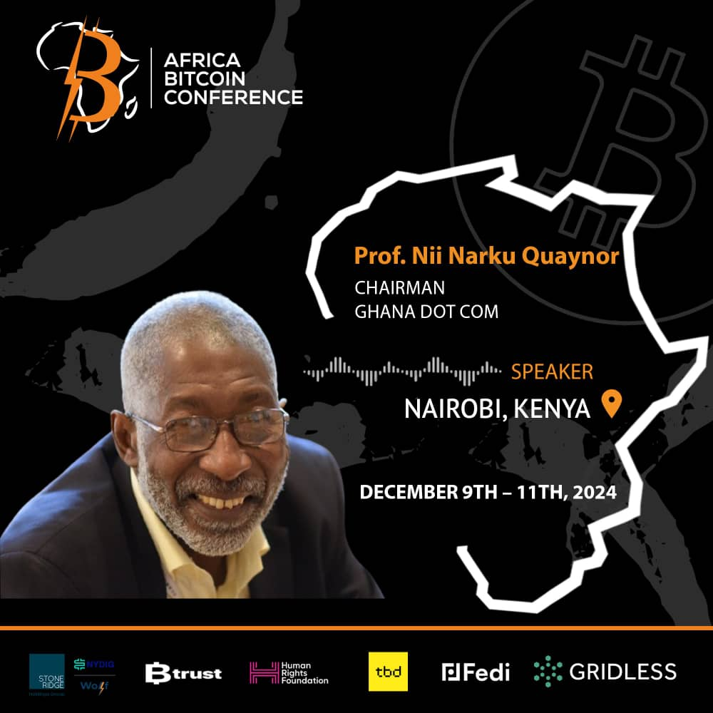

Welcome to My Academic Website
About Me
I am a Professor in the Department of Computer Science and Information Technology, teaching students on how computers where built. "Nii Quaynor graduated from Dartmouth College in 1972 with B.A (Engineering Science) and received a Ph.D (Computer Science) in distributed systems in 1977 from S.U.N.Y at Stony Brook. He worked with DEC, U.S.A from 1977 till 1992 and returned to Ghana to establish the first ISP operated by Network Computer Systems in 1993. He had earlier in 1977 established the Computer Science department at the University of Cape Coast, Ghana. He is the Convener of AfNOG, a network technology transfer institution since 2000 and founding Chairman of AFRINIC, the African numbers registry. Nii taught microprocessors with International Center for Theoretical Physics in several developing countries."

|
||
|  |